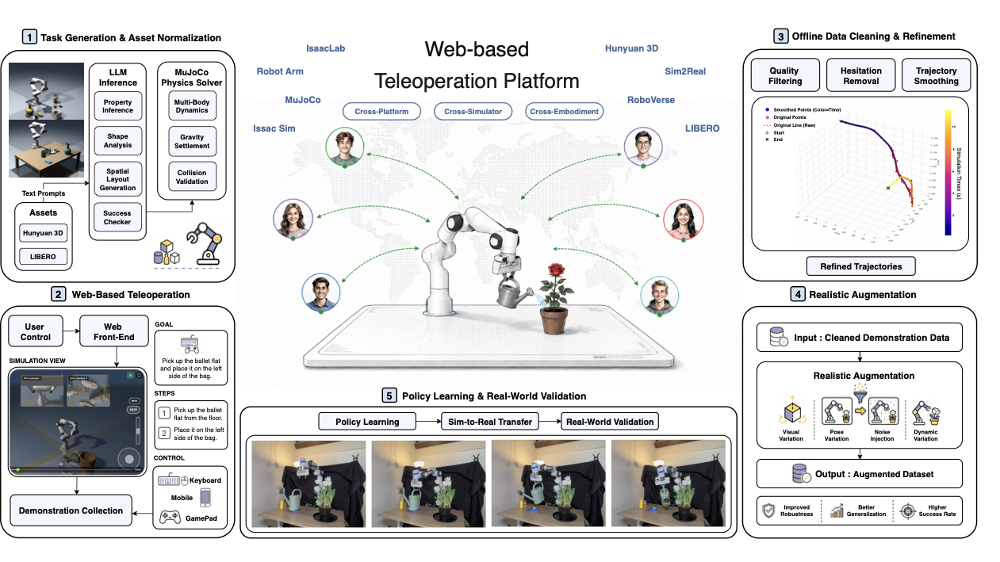
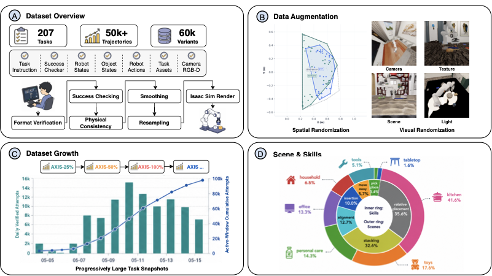
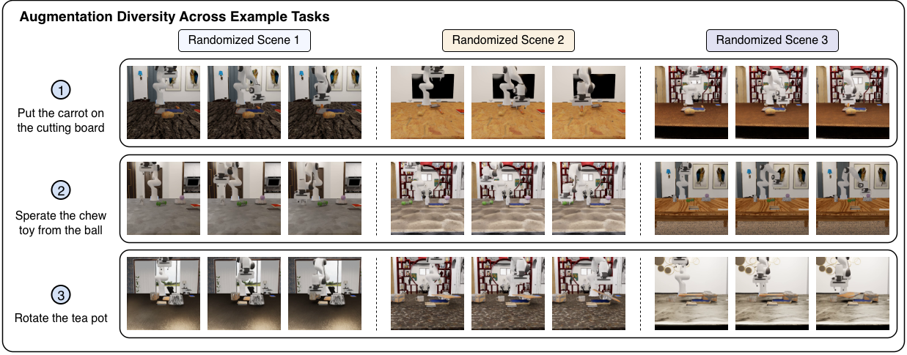
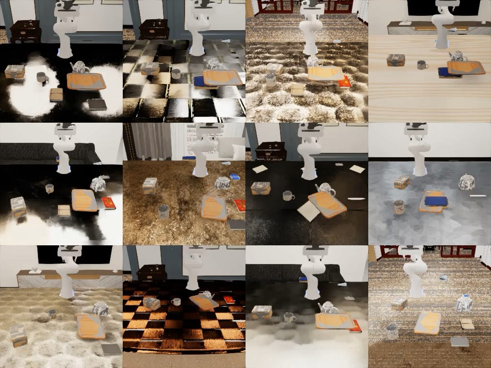
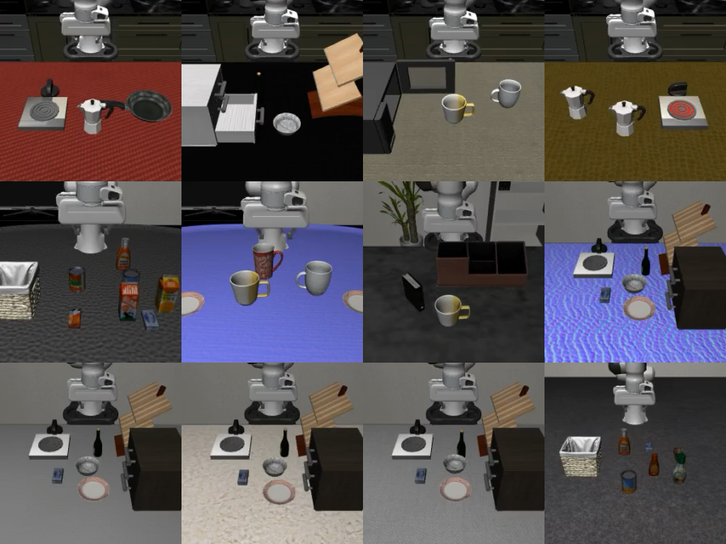

Capture • Dataset • Evaluation
AXIS
A Growable Community-Driven Data Engine
for Scalable Robot Manipulation
AXIS turns accessible browser-based teleoperation into a continuously growing, training-ready robot manipulation dataset. It combines task generation, community demonstrations, automated validation, trajectory refinement, IsaacSim augmentation, and fixed-protocol policy evaluation.

AXIS system overview: task generation, browser-based teleoperation, offline data processing, simulation augmentation, policy learning, and real-world validation.
Abstract.
Robot manipulation policies require diverse, high-quality demonstrations, but existing data pipelines are hard to scale because they often rely on specialized hardware, centralized operators, or fixed task suites. AXIS is a growable community-driven data engine and benchmark for scalable manipulation learning.
AXIS collects demonstrations through browser-based MuJoCo-WASM teleoperation, generates and validates new tasks automatically, and converts community demonstrations into training-ready data through success checking, filtering, smoothing, resampling, and IsaacSim-based visual and physics augmentation.
To make growth measurable, AXIS organizes data into task snapshots and evaluates policies with a fixed held-out protocol. The current experiments compare representative vision-language-action baselines and study scaling behavior across AXIS-25%, AXIS-50%, and AXIS-100%.
Scalable Robot Data Collection.
Collection stays lightweight in the browser; validation, rendering, augmentation, and learning run on the backend.
The AXIS collection layer separates latency-sensitive teleoperation from compute-heavy data processing. Contributors operate a Franka Research 3 arm in a MuJoCo-WASM browser frontend with commodity input devices, while uploaded trajectories are routed to backend machines for validation, cleaning, replay, rendering, augmentation, and export.
Data engine stages
- 01 Task generation and asset normalization
- 02 Web-based MuJoCo-WASM teleoperation
- 03 Success checking and trajectory upload
- 04 Filtering, hesitation removal, smoothing, and resampling
- 05 IsaacSim visual and physics augmentation
- 06 VLA training, fixed-protocol evaluation, and real-world rollout
Browser teleoperation
Contributors collect demonstrations without local simulator installation, GPUs, or specialized robot hardware.
Unified trajectory format
Each episode stores task metadata, embodiment, simulator version, observations, states, actions, and success information.
Quality refinement
Backend validation removes corrupted records, failed tasks, idle segments, jitter, and nonphysical discontinuities.
Realistic augmentation
Scene, camera, lighting, texture, pose, friction, mass, and dynamics variations expand the training distribution.
The AXIS Franka Dataset.
AXIS is a tabletop manipulation dataset built around a Franka Research 3 robot with a parallel-jaw gripper. Each task includes a language instruction, a parameterized simulation scene, task assets, and a structured success checker. Each trajectory provides synchronized robot states, object states, robot actions, task metadata, success labels, and multi-view RGB-D observations.
Dataset snapshot
- Tasks
- 1,006
- Trajectories
- 917,313
- Duration
- 1056h 32m
- Robot
- Franka Research 3
- Cameras
- Third-view + wrist RGB-D
- Evaluation
- Fixed held-out protocol

Trajectory refinement
Raw community demonstrations may contain hesitation, jitter, low-frequency sampling artifacts, or invalid transitions. AXIS filters and refines these demonstrations before converting them into policy-learning data.
| Data Version | Sampling Rate | Mean Acceleration | Mean Jerk | Replay Success |
|---|---|---|---|---|
| Raw Teleoperation | 5.0 Hz | 1.3539 | 11.5899 | 100.0% |
| Smoothed | 5.0 Hz | 0.6382 | 2.9160 | 91.4% |
| Smoothed + Resampled | 20 Hz | 0.4885 | 2.2243 | 86.2% |

A living benchmark
Instead of treating the dataset as a one-time release, AXIS organizes training data into progressively larger snapshots. AXIS-25%, AXIS-50%, AXIS-100%, and future versions preserve shared data format, task definitions, success checkers, rollout budgets, and evaluation tasks, so scaling studies can isolate the effect of training coverage.
AXIS-25%low-volume scaling point
AXIS-50%mid-scale task coverage
AXIS-100%current full snapshot
AXIS-...future growable releases


What the dataset contains
language instruction
task assets
success checker
robot states
object states
robot actions
third-view RGB-D
wrist RGB-D
metadata
failure labels
Simulation demos
Experiments.
The experiments evaluate whether AXIS pretraining improves downstream LIBERO-Plus robustness for π0.5, whether the improvement scales with AXIS data volume, and which perturbation axes benefit most from AXIS-style augmentation and task diversity.
Headline result.
π0.5 + AXIS-100% reaches 79.4 overall LIBERO-Plus success, compared with
66.5 for vanilla π0.5 and 57.5 for a RoboCasa-matched simulation baseline.
| Pretraining | # demos | Overall ↑ | Cam. | Light | Noise | B.G. | Layout | Lang. | Robot |
|---|---|---|---|---|---|---|---|---|---|
| π0.5 vanilla | 0 | 66.5 | 50.3 | 90.6 | 61.8 | 87.7 | 61.7 | 71.9 | 54.8 |
| π0.5 + AXIS-25% | 0.25 NAXIS | 72.0 | 56.1 | 91.8 | 68.1 | 89.1 | 72.1 | 76.0 | 61.3 |
| π0.5 + AXIS-50% | 0.50 NAXIS | 75.1 | 59.7 | 92.5 | 72.5 | 89.6 | 77.9 | 78.3 | 65.1 |
| π0.5 + AXIS-100% (ours) | NAXIS | 79.4 | 65.5 | 93.1 | 78.5 | 90.4 | 84.9 | 81.1 | 70.2 |
| π0.5 + RoboCasa-matched | NAXIS | 57.5 | 35.2 | 79.5 | 63.2 | 81.7 | 68.0 | 49.2 | 39.4 |
Per-perturbation robustness
Layout
+23.2Largest gain over vanilla, matching AXIS spatial randomization.
Sensor Noise
+16.7Robustness improves under photometric observation shifts.
Robot Pose
+15.4AXIS helps beyond explicitly randomized perturbation axes.
Camera
+15.2Viewpoint variation transfers to LIBERO-Plus camera shifts.
| Axis | π0.5 vanilla | + AXIS-25% | + AXIS-100% | + RoboCasa-m. | ∆van | AXIS−RC |
|---|---|---|---|---|---|---|
| Camera | 50.3 | 56.1 | 65.5 | 35.2 | +15.2 | +30.3 |
| Light | 90.6 | 91.8 | 93.1 | 79.5 | +2.5 | +13.6 |
| Sensor Noise | 61.8 | 68.1 | 78.5 | 63.2 | +16.7 | +15.3 |
| Background | 87.7 | 89.1 | 90.4 | 81.7 | +2.7 | +8.7 |
| Layout | 61.7 | 72.1 | 84.9 | 68.0 | +23.2 | +16.9 |
| Language | 71.9 | 76.0 | 81.1 | 49.2 | +9.2 | +31.9 |
| Robot | 54.8 | 61.3 | 70.2 | 39.4 | +15.4 | +30.8 |
| Overall | 66.5 | 72.0 | 79.4 | 57.5 | +12.9 | +21.9 |
Real-world rollouts
BibTeX.
BibTeX
@misc{axis2026growable,
title = {AXIS: A Growable Community-Driven Data Engine for Scalable Robot Manipulation},
author = {{Axis Robotics Team}},
year = {2026},
note = {CoRL 2026 submission}
}